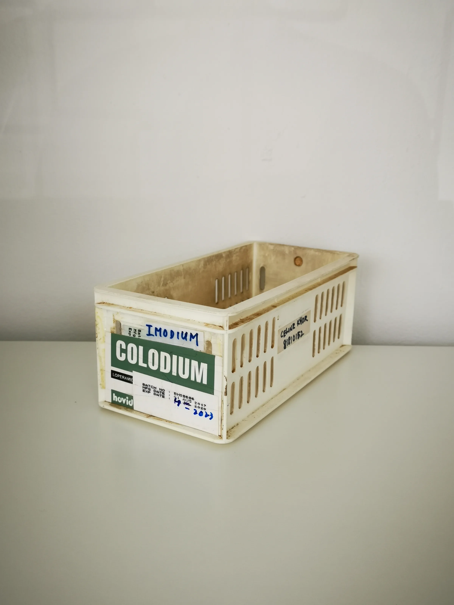

This comprehensive guide provides professional buyers with key insights into sourcing Aqualyx for spas, clinics, and resellers, focusing on procurement strategies and logistics.
Intro
As a professional buyer in the aesthetic and wellness industry, sourcing the right products is crucial for your business's success. Aqualyx, a popular lipolysis solution, has gained traction among clinics, spas, and resellers, but navigating the procurement landscape can be challenging. With the increasing demand for non-invasive body contouring solutions, understanding how to effectively source Aqualyx from a reliable distributor is essential to meet client demands and maintain a competitive edge.
In this guide, we will equip you with the knowledge needed to make informed purchasing decisions regarding Aqualyx. From understanding the product to evaluating suppliers, this comprehensive resource will help you streamline your procurement process, ensuring you have the right products at the right time to satisfy your clientele.
Key Takeaways
- Identify reputable Aqualyx distributors to ensure product quality and compliance with regulations.
- Understand the importance of MOQ (Minimum Order Quantity) for effective inventory management and cost efficiency.
- Evaluate packaging options to ensure product integrity during shipping and storage.
- Communicate clearly with suppliers about your specific needs and expectations to avoid misunderstandings.
- Plan for reorder cycles to maintain consistent stock levels and avoid shortages, particularly during peak seasons.
What this guide covers

- Understanding Aqualyx and its applications
- Identifying relevant buyers and their needs
- Comparison criteria for sourcing
- Checklist for requesting quotes
- Logistics considerations for shipping and packing
- Planning for MOQ and reorder strategies
- Frequently asked questions
What buyers should understand first
Aqualyx is an injectable solution designed for lipolysis, specifically targeting localized fat deposits. It is primarily used in aesthetic treatments to help clients achieve their desired body contours. As a buyer, it is crucial to understand the product's characteristics, including its formulation and intended use, without delving into treatment protocols or medical advice.
When sourcing Aqualyx, buyers should focus on selecting a distributor that adheres to regulatory standards and provides comprehensive product documentation. This ensures that the products you receive are safe, effective, and compliant with local regulations. Additionally, understanding the shelf life and storage requirements of Aqualyx is vital for maintaining product efficacy.
Which buyers is this most relevant for?
This guide is particularly relevant for clinics, spas, and resellers that offer aesthetic treatments. Each of these business types may have different procurement needs:
- Clinics: Typically require larger quantities for ongoing treatments and need to plan for patient demand. They may also need to consider the variety of treatments offered and the corresponding Aqualyx formulations required.
- Spas: Often look for smaller, more flexible orders to accommodate varying client preferences and seasonal trends. They may need to adjust their orders based on promotional events or new service offerings.
- Resellers: Need to evaluate product demand and establish relationships with multiple suppliers to ensure a steady inventory. They must also consider market trends and customer feedback to optimize their stock levels.
Understanding these scenarios will help you tailor your procurement strategy to meet the specific needs of your business and maximize your investment in Aqualyx.
How to compare options before ordering

Before placing an order for Aqualyx, consider the following comparison criteria:
- Product Type: Ensure you are sourcing the correct formulation and concentration that aligns with your treatment offerings.
- Brand Reputation: Research the distributor's reputation and customer reviews to gauge reliability and quality.
- Packaging: Look for secure packaging that protects the product during transit and storage, minimizing the risk of damage.
- Batch and Expiry Visibility: Confirm that the supplier provides clear information on batch numbers and expiry dates to ensure product safety.
- Supplier Communication: Evaluate how responsive and informative the supplier is during your inquiries, as this can impact your overall experience.
- Destination Requirements: Consider any specific shipping requirements based on your location, including customs regulations and import duties.
Buyer checklist before requesting a quote
Use this checklist to ensure you have all necessary information before reaching out for a quote:
- Identify your required quantity and any specific product variants, including concentrations and packaging sizes.
- Confirm your shipping address and any special handling instructions to avoid delays.
- Prepare questions regarding lead times, payment terms, and return policies.
- Check for any required documentation or certifications that may be needed for compliance.
- Review your budget and pricing expectations to align with your procurement strategy.
Shipping, packing and documentation questions
Logistics play a critical role in the procurement process. Here are some common questions to consider:
- What shipping methods are available, and how do they impact delivery times and costs?
- What packaging standards does the supplier adhere to for product safety, and how is the product protected during transit?
- Will you receive tracking information for your shipment to monitor its progress?
- What documentation will accompany the shipment (e.g., invoices, certificates of authenticity)?
- Are there any customs requirements for importing Aqualyx into your region, and how can you ensure compliance?
MOQ, quotation and reorder planning
When preparing to order Aqualyx, consider the following:
- Determine your MOQ based on your sales forecasts and storage capacity to avoid overstocking or running out of product.
- Plan for different product variants to cater to your clientele, ensuring you have a diverse offering.
- Provide accurate destination details to avoid shipping delays and ensure timely delivery.
- Contact SOLA to confirm current availability and request a wholesale quotation tailored to your needs.
FAQ
What is Aqualyx used for?
Aqualyx is used for lipolysis, targeting localized fat deposits in aesthetic treatments.
How do I find a reliable Aqualyx distributor?
Research potential distributors, check their reputation, and ensure they provide proper documentation and support.
What is the typical MOQ for Aqualyx?
MOQs can vary by supplier, so it’s essential to confirm this with your chosen distributor to align with your purchasing strategy.
What should I consider when planning reorders?
Evaluate your sales trends, lead times, and storage capacity to plan effective reorders that meet client demand without excess inventory.
How can I ensure safe shipping of Aqualyx?
Choose suppliers that use secure packaging, provide tracking information for shipments, and comply with all relevant shipping regulations.
Contact SOLA for wholesale quotation via WhatsApp.
Planning a wholesale request?
Send product names, quantities and destination for a tailored discussion.
Contact SOLA on WhatsApp →General educational content for professional buyers. Not medical, legal, regulatory or import advice.
Image sources: Interior of Snow Clinic Ansan branch in March 2026.jpg 04.jpg by ELIZABETH XIONG (CC BY 4.0, 4284x5712 px); Medicine storage container 06.jpg by Wikimedia Commons contributor (CC0, 2736x3648 px); Moving medical supplies (8662665).jpg by U.S. Army AMLC by C.J. Lovelace (Public domain, 2160x2229 px).